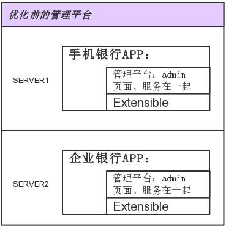
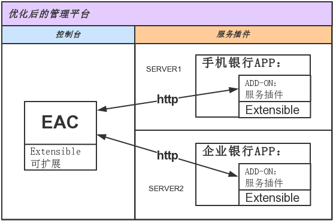
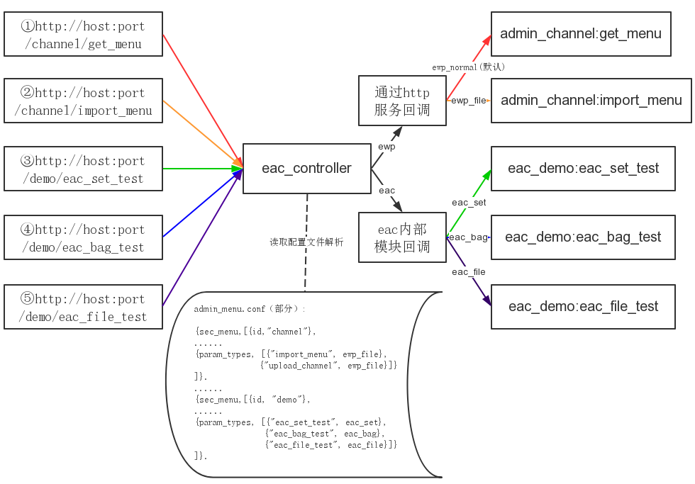

- Introduction
- 1. 代码提交
- 2. 编码规范
- 3. 代码评审
- 4. 持续集成
- 5. 代码服务器
- 6. 技术期刊
- 7. 需求文档
-
8.
设计文档
- 8.1. 文件上传
- 8.2. 离线资源
- 8.3. 可靠消息
- 8.4. Editor调试工具
- 8.5. EMP设计
- 8.6. EWP设计
- 9. 测试文档
- 10. 客户端其他功能
- 11. 技术积累
- Published using GitBook
EMP管理平台优化设计
1 需求概述
EWP管理平台是为EWP产品提供服务的一个统一的管理平台，随着功能的增多和不断完善，管理平台与EWP本身的耦合度越来越高，偏离了设计的初衷。同时，由于管理平台的耦合度过高，在实际项目中，达不到项目的安全需求和功能扩展。综上所述，整理出以下需求：
- 降低管理平台与ewp之间的耦合度。
- 使管理平台满足实际项目的安全需求。
- 管理平台的功能扩展。
- 多APP管理。
2 管理平台的优化设计
根据需求，管理平台将作出以下优化：
- 降低管理平台与ewp的耦合度：将管理平台的代码与ewp分离。
将分离后的管理平台拆分成两部分：控制台和服务插件。
将拆分的控制台部分做成一个依赖ewp运行的application，命名为EAC（Ewp Admin Console）。而服务插件部分，做成一个提供管理平台功能的插件。 这两部分都能够进行功能上的扩展。
如图2-1、2-2表示，管理平台优化前后的对比。

图2-1 管理平台优化前设计

图2-2 管理平台优化后设计
3 EAC（Ewp Admin Console）
EAC的功能设计：
- 独立编译、运行
- 自定义菜单配置
- 请求、响应转发
- 功能扩展
- 多APP访问
3.1 独立编译、运行
将EAC作为一个与emas类似的application形式，可以独立的编译和配置，所以创建了configure.ac和makefile.in等自动化编译脚本，能够进行EAC的自动化配置和编译。 将所有的静态页面与相关的资源都迁移到EAC下的public/admin中。可根据项目的实际需求修改相应的页面及其他资源。
3.2 自定义菜单配置
EAC的主页面菜单是通过文件配置admin_menu.conf来实现自定义功能的。菜单分为一级菜单和二级菜单。点击一级菜单会展现二级菜单，点击二级菜单会展现相关页面。
下图3-1表示，具体表现与菜单配置的关系。

图3-1 菜单配置
3.3 请求、响应转发
EAC现在是通过http的传输方式，来转发Web页面的请求和服务插件的响应。这样，可将EAC部署在内网或其他安全的环境，就可以满足实际项目的安全需求。
3.4 功能扩展
管理平台的功能调用方式是通过配置admin_menu.conf文件实现的，EAC的配置有两种映射方式：1、映射到插件的功能模块，通过http调用插件的接口函数。2、映射到EAC内部功能模块，通过指定Mod:Func来完成回调。 根据配置文件中的二级菜单id和params属性，映射到指定的接口函数，完成回调。所以，对于EAC的功能扩展来说，只需要配置好admin_menu.conf配置文件，并完成扩展功能的实现即可。
如图3-2表示EAC的逻辑映射关系：

图3-2 EAC的逻辑映射关系
① http://host:port/channel/get_menu
② http://host:port/channel/import_menu
③ http://host:port/demo/eac_set_test
④ http://host:port/demo/eac_bag_test
⑤ http://host:port/demo/eac_file_test
①、②为APP服务的接口，所以eac_controller会通过http与APP服务交互，完成回调。
③、④、⑤为eac内部模块的回调，eac_controller根据配置内容，将上送参数生成dict()类型的参数P，完成回调：eac_demo:eac_XXX_test(P)，即能达到自定义功能扩展的目的。
3.5 多APP访问
EAC可以实现多个APP的管理。在登陆界面输入相应的APP名字，就可以管理对应的APP，如，emas、ebank等。 实现这个功能，也是通过配置文件来完成的。通过配置文件eac.conf中的http属性即可。在管理平台操作时，EAC会通过读取cookie保存输入的APP名字，读取配置文件中的配置，获取该APP的URL，从而实现对APP的访问。
4 服务插件
4.1 服务插件功能设计：
- 独立编译
- 以插件形式提供服务
- 功能扩展
4.2 独立编译
作为管理平台的功能接口，用户应该可以根据实际需求来修改功能。所以，创建了configure.ac和makefile.in等自动化编译脚本，能够进行服务插件的自动化配置和编译。
4.3 以插件形式提供服务
管理平台插件，只是单纯的提供管理平台上的功能。所以，其只能运行在ewp的服务下，不能脱离ewp单独运行。 管理平台作为APP的插件，将管理平台插件的命名为"admin"，其代码放在"ewp/addon/"路径下。加载插件后，就可以使用了。
4.4 功能扩展
管理平台的插件同样可以进行功能扩展。根据3.4节介绍的映射方式一：映射到插件的功能模块，通过http调用插件的接口函数。配置好admin_menu.conf后，并完成扩展功能的实现即可。